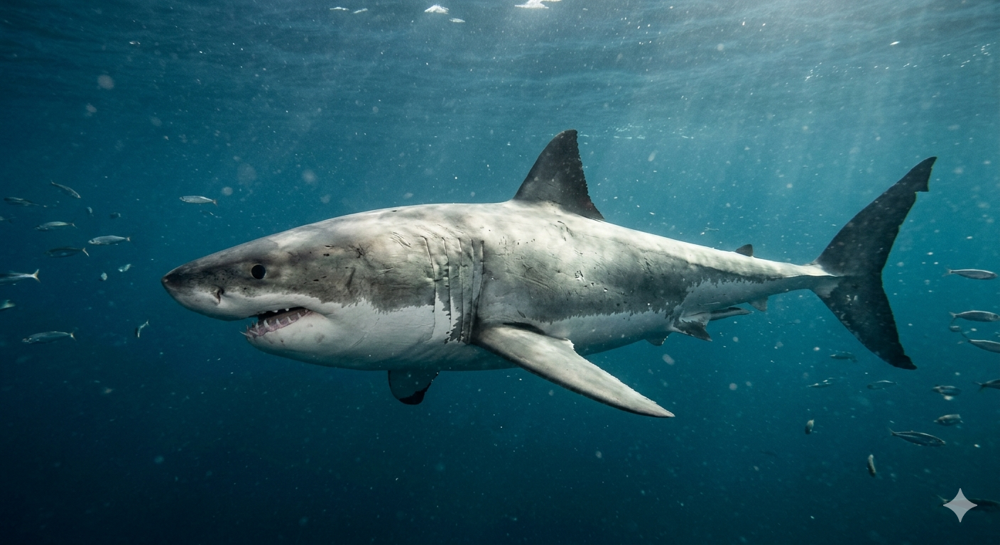
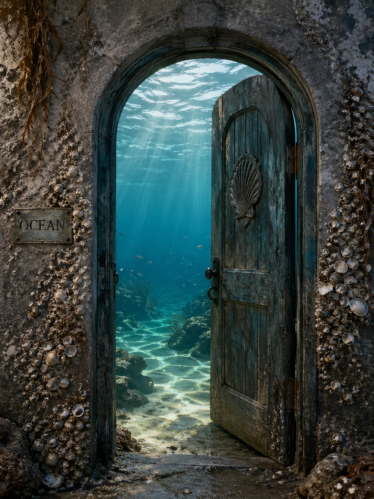

You are a hungry shark swimming through the deep ocean. Ahead of you, three signs pull you in different directions. To your left, silver bodies flash as a school of fish moves quickly through the water. Ahead, bubbles rise from a lone human diver. Far below, a golden light shines from a hidden shipwreck. Choose carefully. Every path changes your fate.

You chase after a huge school of fish flashing through the blue water. They move like one living cloud. You must decide whether to attack immediately or wait for the perfect moment.
You burst forward without warning. The fish scatter in every direction. In the confusion, you can either grab a few quickly or give up and turn away.
You stay hidden in the dark water until the fish tighten together. Now you can strike perfectly or hesitate too long.
You notice a lone diver exploring near the coral reef. Bubbles rise to the surface as they search the ocean floor. You must choose whether to attack directly or watch from a distance.
You lunge through the water. The diver panics and kicks wildly. You can keep chasing or pull away before help arrives.
From the shadows, you notice the diver shining a light into the sand. They seem to have discovered something unusual. You can follow them closer or leave them alone.
A golden light glows from a shipwreck below. The broken wreck is full of mystery, and something valuable waits inside. This path leads only to success, but you still decide how the shark reaches it.
You slip through a hole in the wreck and glide past broken wood and rusted treasure chests. Ahead, you can follow the golden glow or investigate a chamber filled with jewels.
You swim around the wreck carefully and discover a hidden opening covered in seaweed. You can enter through the opening or uncover a chest buried nearby.